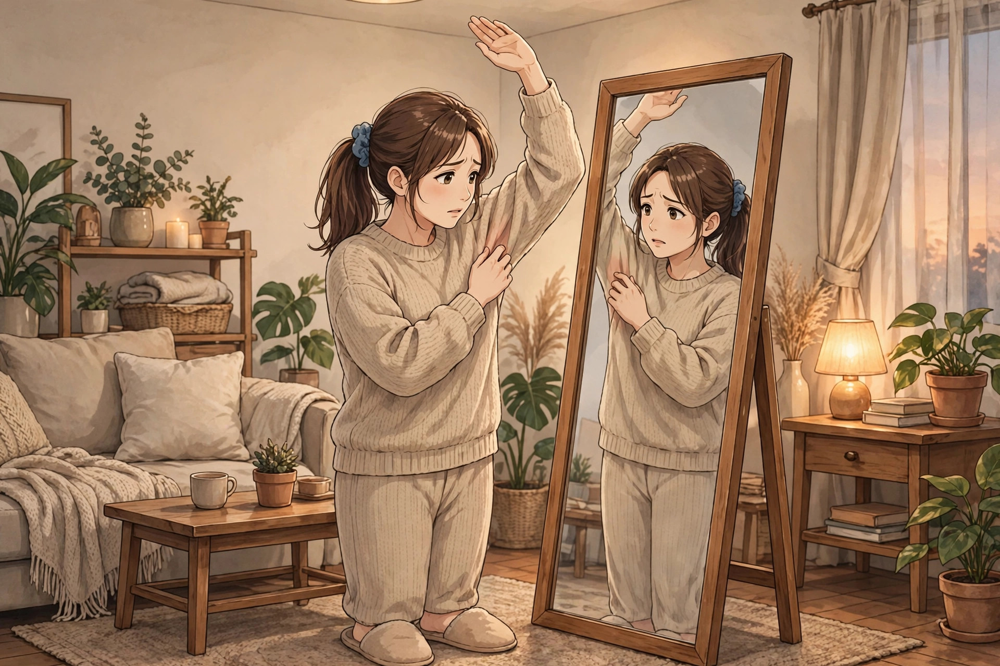
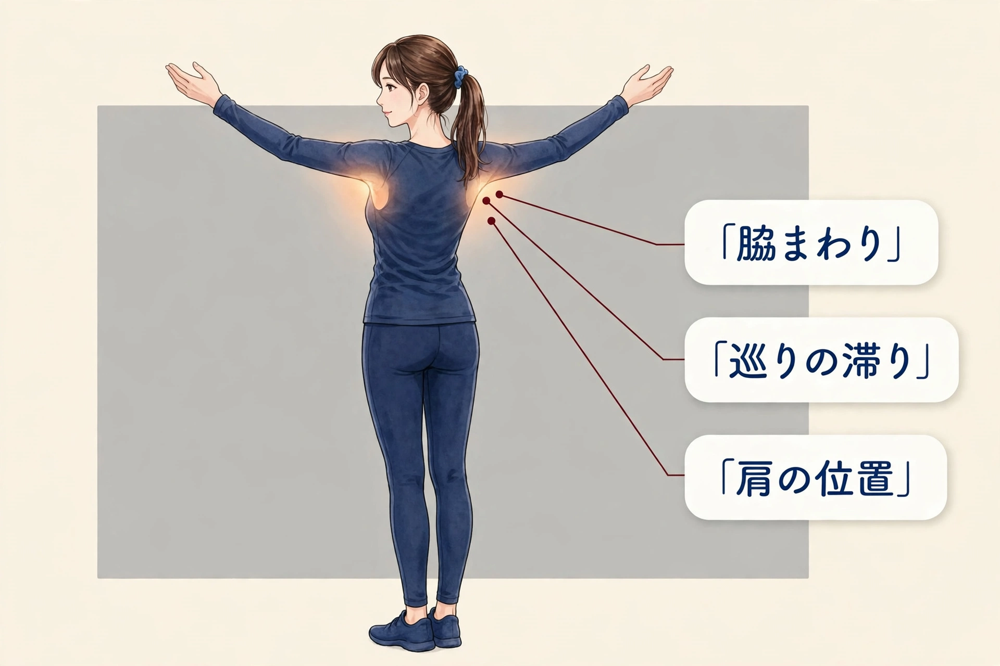

脇のはみ肉
美容整体ステラ・ポラリス東三国｜大阪市淀川区東三国・東三国駅徒歩5分・女性向け

脇にのるふくらみをすっきりさせて、腕まわりのラインを整える
ブラジャーの上や、ノースリーブ・ぴったりした服を着たときに脇からふくらむ「はみ肉」が気になる、というお悩みは女性に多いものです。脇まわりは、姿勢の崩れで肩が前に出たり、肩甲骨の動きが小さくなったりすると、脂肪やたるみが集まりやすい場所と言われています。下着の締めつけや巡りの滞りも重なり、夕方には脇まわりがむくんで見えることもあります。このページでは、脇のはみ肉の背景にある仕組みと、脇まわりがすっきり見える状態を目指す当サロンでのケア、ご自宅でできるセルフケアをご案内します。脇まわりは服のラインに直結する場所だからこそ、姿勢と巡りを整えることで見え方の変化を感じやすい部位でもあります。まずは下のチェックで、ご自身の状態を確かめてみてください。
ご予約はこちら（Coubic）こんなお悩みありませんか
- ブラジャーの上から、脇の肉がふくらんではみ出す
- ノースリーブや水着を着ると、脇まわりが気になって避けてしまう
- 二の腕を上げると、脇の下にたるみが集まる感じがする
- 夕方になると脇まわりがむくんで、下着の跡が残りやすい
- 脇の下を触ると、冷たく感じることがある
- 肩が前に出ていて、脇がつぶれたような姿勢になっている
- 背中や二の腕のケアをしても、脇だけ残る気がする
当てはまる項目が多いほど、姿勢の崩れと脇まわりの巡りの滞りが重なっている目安とされています。脇のはみ肉は、脇そのものだけでなく、肩や肩甲骨の位置と一緒に見直すことが大切です。次のセルフチェックで、肩の位置の傾向を確かめてみましょう。
簡単セルフチェック（肩と脇の開きチェック）
鏡の前に立って、脇まわりの見え方を確かめる簡単な方法です。
- 鏡の前に自然に立ち、腕を体の横に下ろして、脇のふくらみ具合を見ます。
- 次に、両腕を肩の高さまで横に上げて、脇の下が伸びる感じと見え方の変化を確認します。
- 腕を下ろしたときに脇がつぶれて肉が寄りやすく、肩が前に出ている場合は、姿勢と肩甲骨の動きが関わっている目安と言われています。
※これは診断ではありません。ご自身の状態の傾向を知る目安としてお使いください。
脇のはみ肉の原因と仕組み
脇は「集まりやすい」場所
脇まわりは、胸・二の腕・背中の境目にあたり、もともと脂肪がつきやすく、たるみが目立ちやすい場所です。加齢や運動量の低下でまわりの筋肉が弱くなると、支えを失った組織が脇に寄って見えることがあります。図1のように、脇は複数の部位の境目であるため、姿勢や巡りの影響を受けやすい場所と言われています。骨格や脂肪のつき方には個人差がありますが、同じ人でも姿勢ひとつでふくらみの見え方が変わる、変化を感じやすい場所でもあります。

図1 肩の位置と脇まわりの見え方の関係、巡りが流れやすい状態のイメージ。姿勢が整うと、脇まわりの見え方は変わりやすくなります。体の状態には個人差があります。
肩が前に出る姿勢との関係
猫背や巻き肩で肩が前に出ると、脇の下のスペースがつぶれ、胸の横の組織が前に押し出されるように見えがちです。肩甲骨が背中の外側に開いたまま動きが小さくなると、脇から背中にかけてのラインがもたつき、下着の上にのるふくらみにつながります。デスクワークで前かがみの姿勢が続く方ほど、この傾向は強くなりやすいと言われています。姿勢を整えることは、脇まわりの見え方を変える土台になります。
巡りの滞りとむくみ
脇の下にはリンパの流れの要所があり、腕や胸まわりの巡りと関わると言われています。同じ姿勢が続いたり、きつめの下着で圧迫が続いたりすると、巡りが滞ってむくみやすく、はみ肉が強調されて見えることがあります。夕方に気になる場合は、脂肪だけでなくむくみが重なっている目安になります。腕を大きく動かす機会が少ない生活も、巡りを滞らせる一因になります。
下着のサイズと習慣
サイズの合わない下着は、脇まわりを締めつけてふくらみを目立たせる一因になります。カップに収まりきらない組織が脇側へ逃げることもありますし、逆にゆるすぎる下着では支えが効かず、たるみが目立つこともあります。姿勢・巡り・下着の3つが重なって見え方を左右するため、一つずつ見直していくことが脇まわりのすっきり感につながります。
セルフケアで足りる場合・サロンケアが向く場合
脇のふくらみが軽く、下着を正しく着け直したり腕を大きく動かしたりするとすっきり見える日が多い場合は、まずご自宅でのセルフケアと下着の見直しを続けて様子を見る方法があります。一方で、姿勢の崩れが強く脇がつぶれた状態が続いている、むくみが重なって夕方のふくらみが目立つ、背中や二の腕と一緒に整えたいという場合は、サロンでのケアが向いている目安になります。サロンでは、姿勢の土台づくりと巡りを促すケアを組み合わせて、施術後に「脇が開いた」「服のラインがすっきりした」と感じやすい状態を目指します。どちらが正解というものではなく、今の状態に合わせて選ぶことが大切です。
当サロンでのケア
当サロンの脇のはみ肉ケアは、「脇の下が開いて、腕まわりのラインがすっきり見える状態」を目指す組み立てです。まず肩の位置と肩甲骨の動きを一緒に確認し、脇まわりとつながる背中や二の腕も含めて、部位と目的に合わせて3つの手技を組み合わせます。
美容整体：肩の位置と肩甲骨の動きを整え、脇の下のスペースが開きやすい姿勢の土台をつくることを目的に。胸が開いて、まっすぐ立つ感覚を取り戻すお手伝いをします。
アロマオイルマッサージ：脇の下から二の腕、背中の脇側をオイルで流すようにゆるめ、巡りが流れやすい状態を目指します。むくみが重なりやすい脇まわりに、ていねいにアプローチします。
もみほぐし：肩甲骨の外側や脇の後ろ側など、固くなりやすいポイントをほぐし、腕が上げやすくなる感覚を目指して進めます。
ケアを通して目指すのは、こんな変化です。
- 脇の下が開いて、下着や服のラインがすっきり見える状態へ
- 肩が後ろに収まり、胸が開いた姿勢へ
- 脇まわりのむくみが流れやすく、夕方のふくらみが気になりにくい状態へ
- 二の腕から背中まで、つながりのあるラインの見え方へ
- 腕が上げやすくなり、肩まわりが軽く感じる状態へ
施術の仕上げには、脇を開くストレッチや、下着の着け方のコツもお伝えします。姿勢が整ったときの脇まわりのすっきり感を知ることが、日常の姿勢を見直すきっかけになります。脇まわりは変化を感じやすい場所ですので、鏡でラインを確認する習慣もおすすめです。強さは途中でも調整できますので、遠慮なくお声がけください。

施術の流れ
ご来店後、気になる部位やお悩み、ご希望の強さなどをうかがいます。完全個室のため、周りを気にせずお話しいただけます。
肩の位置や肩甲骨の動き、脇まわりのむくみ具合などを一緒に確認し、その日の状態に合わせた施術の進め方をご案内します。気になる部位は、遠慮なくお知らせください。
美容整体を中心に、ご希望に応じてアロマオイルマッサージ、もみほぐしを組み合わせて進めます。強さは途中でも調整できます。
施術後の状態を確認し、ご自宅で続けやすいセルフケアのポイントをお伝えします。次回の目安についても、ご希望があればご案内します。
料金
| コース | 通常価格 | キャンペーン価格（12/25まで） |
|---|---|---|
| 80分 | 8,000円 | 3,000円 |
| 100分 | 10,000円 | 4,000円 |
| 120分 | 12,000円 | 5,000円 |
クリスマスキャンペーンは12月25日まで、ご新規様もリピーターの方も対象です。施術内容は当日の状態とご希望に合わせて組み立てます。
ご自宅でできるセルフケア
- 脇開きストレッチ：両手を頭の後ろで組み、肘を左右に開いて胸と脇を伸ばします。20〜30秒を2セット、深い呼吸と一緒にゆっくり行ってください。
- 肩甲骨寄せ：両肘を後ろに引き、肩甲骨同士を寄せるようにして5秒キープ。これを5回繰り返し、背中側の動きを取り戻す習慣にします。
- 脇の下のマッサージ：反対側の手の指で脇の下をやさしくつまみ、円を描くようにほぐします。入浴中など体が温まったタイミングが取り入れやすい目安です。
- 下着の見直し：カップとアンダーのサイズが合っているか、着けたときに脇へ肉が逃げていないかを確認します。着け直すだけでも見え方は変わります。
ご自宅でのケアに：セルフケア資料ライブラリ（無料）
このお悩みに合わせたセルフケアの考え方を、無料の資料ライブラリでご紹介しています。
セルフケア資料ライブラリを開く →
受診の目安
脇の下にしこりのようなふくらみがある場合や、片側だけ急に大きくなった、痛みや熱を伴う場合は、施術の前に医療機関への受診をおすすめします。脇まわりはリンパの集まる場所でもあるため、気になる変化があるときは、まず医療機関でご相談ください。
よくある質問
Q. 初めてでも大丈夫ですか？
はい。当サロンは完全予約制・完全個室で、1日3組までのご案内です。最初にカウンセリングで脇まわりのお悩みや姿勢の状態をうかがい、無理のない内容から始めます。施術の前後で「脇が開いた感じがする」「服のラインが違う」といった感覚の違いを一緒に確認しながら進めますので、初めての方も安心してご利用いただけます。
Q. 脇まわりは触られるのが恥ずかしいのですが…
脇まわりはデリケートな部位ですので、タオルワークで覆いながら、必要な範囲だけをケアします。腕の角度や姿勢も、無理のない範囲で調整しながら進めます。気になることがあれば、事前のカウンセリングや施術中でも遠慮なくお声がけください。無理のない進め方を一緒に決めていきます。
Q. コースはどう選べばいいですか？
80分・100分・120分のコースがあり、ケアしたい部位の広さやお時間のご都合に合わせて選べます。脇まわりに加えて背中や二の腕までゆっくり整えたい方には、100分が選ばれることが多いコースです。迷われる場合は、ご予約の際にお気軽にご相談ください。
Q. 場所と予約方法を教えてください。
大阪市淀川区東三国、東三国駅から徒歩5分です。完全予約制のため、予約サイト（Coubic）またはLINE公式アカウントからご予約をお願いしています。
Q. 男性も受けられますか？
当サロンは女性向けのため、男性の方は、同じ東三国の男性専用整体院「北辰堂」をご案内しています。
施術者について
平賀建人（施術歴30年）
鍼灸師・登録販売者・アロマセラピスト・パーソナルトレーナーの資格を持ち、美容整体を中心に、アロマオイルマッサージ、もみほぐしを、その日の状態とご希望に合わせて組み合わせて施術します。このページの内容は、施術者の知識と経験をもとに作成しています。

料金・ご予約
ご新規様もリピーターの方も 12/25まで
80分 3,000円／100分 4,000円／120分 5,000円
通常価格は80分8,000円／100分10,000円／120分12,000円です。施術内容はご希望に合わせて組み立てます。
営業時間：月〜土 17:00〜23:00／日 10:00〜23:00（完全予約制）｜電話：080-2468-3086
大阪府大阪市淀川区東三国2丁目25番4号101（東三国駅徒歩5分）
専門解説で詳しく見る
仕組みから詳しく知りたい方は、専門解説シリーズのこちらの記事もあわせてご覧ください。